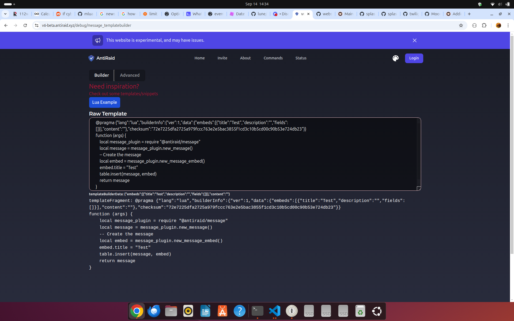

Example Templates
To help you get started with templating, we have provided a few examples below along with explanations of what/how they work
Example 1: Simple Audit Logging
Explanation
1. Pragma
The first line of the template is a pragma. This is a special statement beginning with @pragma or -- @pragma that tells AntiRaid what language the template is written in, what options to use, and how tools such as CI, websites and other automation should handle your template. The rest of the pragma is a JSON object that contains the options. Note that if you do not provide a pragma, a default one will be used, however this will not allow you to provide capabilities to your template such as sending a message on Discord etc.
In this case, we want to tell AntiRaid that we are coding a template in Lua and that we want to allow the capability to send messages to Discord. This is done by adding the allowed_caps key to the pragma and specifying the capabilities we want to allow as seen below:
-- @pragma {"lang":"lua","allowed_caps":["discord:create_message"]}
Another example of pragma is on the Website:

{"lang":"lua","builderInfo":{"ver":1,"data":{"embeds":[{"title":"Test","description":"","fields":[]}],"content":""},"checksum":"72e7225dfa2725a979fccc763e2e5bac3855f1cd3c10b5cd00c90b53e724db23"},"allowed_caps":["discord:create_message"]}
Here, notice that the builderInfo contains the embeds, content, and checksum of the template. When the user wants to reread their template, the website only has to reread the pragma statement to reconstruct the state and show the right tab (either Builder if they are just making a simple embed, or Advanced if they were making changes to the content of the template itself). Without the pragma, the website would have to use its own arcane syntax on top of comments or execute the template just to reconstruct state.
2. Creating a message
Next, we need to extract the arguments and token from the context. The arguments are passed to the template when it is executed and contain all the data we need to work with. The token is used to authenticate the template and gain access to the templates context in privileged AntiRaid API's. All of this is provided using variable arguments.
local args, token = ...
There are 3 things we want to import for this template to work. The first is the Discord module, which allows us to send messages to Discord. The second is the Interop module, which provides some functions allowing for seamless interoperability between your template and AntiRaid. The third is the Formatters module, which provides some helper methods for formatting audit log fields (formally known as gwevent_fields).
local discord = require "@antiraid/discord"
local interop = require "@antiraid/interop"
local formatter = require "@antiraid/formatters"
Next, we create the embed. args.event_titlename is specific to Audit Logs and contains the friendly name for an event.
-- Make the embed
local embed = {
title = args.event_titlename,
description = "", -- Start with empty description
}
NOTE: You can use the API Reference to see what functions are available in the AntiRaid SDK
3. Adding fields
TIP: When making a template for a Gateway Event, the fields are passed to the template through a table named fields.
The next step is to add fields to the embed. In this case, we can do this by iterating over fields. In Lua, tables can be iterated over using the builtin pairs function like below:
for key, value in pairs(my_table) do
-- Do something with key and value
end
In the same way, we can now iterate over args.event_data:
for key, value in pairs(args.event_data) do
-- Do something with key and value
end
When using Audit Log Events, there are two cases to pay attention to, the first is the field itself being nil and the second is the field type being None. In both cases, we don't want to add the field to the embed. Lets do that!
local should_set = false
if value ~= nil and value.field.type ~= "None" then
should_set = true
end
Lastly, we need to format the field and add it to the description. Luckily, the formatter plugin provides a function for formatting any categorized field. This function is called format_gwevent_field.
local formatted_value = formatter.format_gwevent_field(value)
4. Sending the message
Finally, we can send the message using the Discord module. To do this, we need to create a message object and set the embeds property to an array containing our embed. This is also where interop comes in handy, as we need to set the metatable of the embeds array to the interop array metatable so AntiRaid knows that embeds is an array. Next, we use the Discord plugin to make a new Discord action executor which then lets us send the message to the specified channel (args.sink is another Audit Log specific variable that contains the channel ID/whatever sink is set to in the database).
local message = { embeds = {} }
setmetatable(message.embeds, interop.array_metatable)
table.insert(message.embeds, embed)
-- Send message using action executor
local discord_executor = discord.new(token);
discord_executor:create_message({
channel_id = args.sink,
message = message
})
Finally, we can put the entire loop together as so:
-- @pragma {"lang":"lua","allowed_caps":["discord:create_message"]}
local args, token = ...
local discord = require "@antiraid/discord"
local interop = require "@antiraid/interop"
local formatter = require "@antiraid/formatters"
-- Make the embed
local embed = {
title = args.event_titlename,
description = "", -- Start with empty description
}
-- Add the event data to the description
for key, value in pairs(args.event_data) do
local should_set = false
if value ~= nil and value.type ~= "None" then
should_set = true
end
if should_set then
local formatted_value = formatter.format_gwevent_field(value)
embed.description = embed.description .. "**" .. key:gsub("_", " "):upper() .. "**: " .. formatted_value .. "\n"
end
end
local message = { embeds = {} }
setmetatable(message.embeds, interop.array_metatable)
table.insert(message.embeds, embed)
-- Send message using action executor
local discord_executor = discord.new(token);
discord_executor:create_message({
channel_id = args.sink,
message = message
})